Next: Bibliography
Up: General Configurations
Previous: Algorithm
Conversions between Positions and Connectors
In terms of the struct BONDS_GROUP
which has
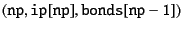,
we can construct the conversions
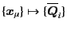
and
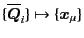.
First, we see the system with a single group.
Because we only take the independent bonds,
the bond index  runs from 0 to
runs from 0 to  (where the number of independent bonds is
(where the number of independent bonds is  ),
while the particle index runs from 0 to
(where the number of particles is
),
while the particle index runs from 0 to
(where the number of particles is  ).
Adding the 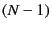-th element of the connector vector
).
Adding the 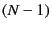-th element of the connector vector
 by the center of mass
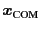 as
by the center of mass
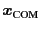 as
(therefore, precisely speaking,
is not
the center of mass though),
the numbers of elements of both
 and
become the same.
and
become the same.
The transformations between them can be constructed as follows.
By definition of connector vectors,
![$\displaystyle \overline{\bm{Q}}_{i} = \bm{x}_{\alpha_{{\tt bonds}[i]}} - \bm{x}_{\beta_{{\tt bonds}[i]}} ,$](img31.png) |
(9.12) |
for
 .
The last element of the connector vector
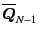 is given by
Eq. (9.11).
This is implemented in the routine BONDS_pos_to_conn_1.
Note that, for the isolated particle,
we define the (generalized) connector vector by
the position itself as
.
The last element of the connector vector
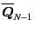 is given by
Eq. (9.11).
This is implemented in the routine BONDS_pos_to_conn_1.
Note that, for the isolated particle,
we define the (generalized) connector vector by
the position itself as
As we see, the relation is linear and the transformation can be
expressed by
where
and 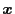 are the generalized vector
with 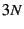 dimension for
and
,
respectively, and
is
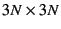 matrix based on the  matrix
matrix
 in Eq. (9.4).
in Eq. (9.4).
The opposite transformation
from
 to
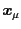 can be obtained
from the inversion matrix
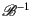.
Alternatively (and directly),
we can calculate the position vectors from the connector vectors
(and the center-of-mass vector) as follows:
For the isolated particle,
to
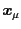 can be obtained
from the inversion matrix
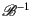.
Alternatively (and directly),
we can calculate the position vectors from the connector vectors
(and the center-of-mass vector) as follows:
For the isolated particle,
For the group with 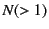 particles,
we take the two steps:
- at the first step,
is formed
with respect to the origin at the
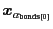,
- then, adjust the origin
with respect to
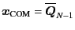.
At the first step,
therefore, we define
as an initial condition.
After it, for the independent bond from 0 to ,
To make this procedure work,
we should assure that
has been defined
by the 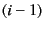-th step.
This condition is satisfied from the fact that
- bonds[] don't have redundant bonds,
- the number of the independent bond is np-1,
- the particle indices
 and
and  are
sorted as in Eq. (9.10),
are
sorted as in Eq. (9.10),
- bonds[] itself is sorted as
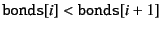.
After the first step,
we calculate
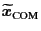 as
and adjust the center of mass to
as
for
 .
.
It should be noted that
the calculation of this rather tedeous procedure is 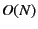,
while the inversion
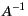 usually costs 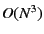.
For the system containing many groups at the same time,
we can apply the above procedure for each group separately,
and the overall calculation is still .
This system-wide transformations are implimented in the routines
BONDS_pos_to_conn and BONDS_conn_to_pos.
Next: Bibliography
Up: General Configurations
Previous: Algorithm
Kengo Ichiki 2008-10-12